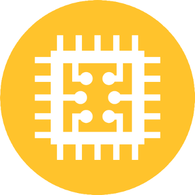

Home
Fábrica
Obras
Produtos e Serviços
Contato
Home
Fábrica
Obras
Produtos e Serviços
Contato

TECNOLOGIA
A PREMAG tem como premissa básica, desde a sua criação, a efetivação de elos estreitos integrando Universidade-Estado-Empresa, em benefício da sociedade brasileira.
O modelo estrutural adotado pela PREMAG, na execução de suas superestruturas de pontes e viadutos, é o mesmo da experiência italiana obtida na execução da autoestrada do Sol e que foi apresentada no Congresso do CEB-FIP de Paris, em 1962.
A contínua pesquisa tecnológica e o lançamento de novos produtos adaptados à realidade nacional são práticas constantes no decorrer das atividades da PREMAG.
Concretos de Alto Desempenho (CAD), com utilização de sílica ativa e cimento portland resistente à sulfatos, são usualmente utilizados nas obras sujeitas a trabalho em meio agressivo.
Ensaios já foram executados na COPPE/UFRJ – Coordenação dos Programas de Pós-Graduação em Engenharia da Universidade Federal do Rio de Janeiro, com utilização de vigas protendidas PREMAG.
Em 1998, foram testadas seis vigas PREMAG com Concreto de Alta Resistência (CAR), atingindo-se valores de até 60 MPa. Os resultados deste trabalho constam da tese de mestrado “Comportamento ao Cisalhamento de Vigas Protendidas”, COPPE, UFRJ, e dos Anais do 40º Reibrac realizado pelo IBRACON – Instituto Brasileiro do Concreto, no Rio de Janeiro, RJ, 1998.
Em 2002 foram feitos estudos para avaliar o comportamento da ligação entre viga e laje pré-fabricadas produzidas pela PREMAG. Este trabalho contou com 14 (quatorze) ensaios de vigas com tamanho real e os resultados constam da tese de doutoramento “Comportamento da Ligação entre Lajes e Vigas Pré-fabricadas Feita com Nichos Preenchidos no Local”, COPPE/ UFRJ, e dos Anais das XXXI Jornadas Sul-Americanas de Ingeniería Estructural, Mendoza, Argentina, 2004.

Na COPPE realizaram-se estudos teóricos sobre bueiros celulares, bem como nova sistemática para otimização da seção transversal de tabuleiros de pontes e viadutos, utilizando o método dos algoritmos genéticos. Este último estudo consta da dissertação de mestrado “Otimização do Projeto de Pontes Protendidas Pré-moldadas pelo Método dos Algoritmos Genéticos”, COPPE, UFRJ, 2004. Outras pesquisas com concretos utilizando fibras de aço foram desenvolvidas na PREMAG por pesquisadores da COPPE/UFRJ, tendo sido apresentadas no 42º Reibrac realizado pelo IBRACON em Fortaleza, CE, 2000.
Hoje, após 36 anos de atividades ininterruptas, a PREMAG ostenta no seu rol de execução de pontes e viadutos, obras que passadas décadas apresentam excelente estado de conservação. Isso vem demonstrar o aprimorado cuidado na concepção e o acurado controle de qualidade imposto no decorrer do seu processo produtivo.